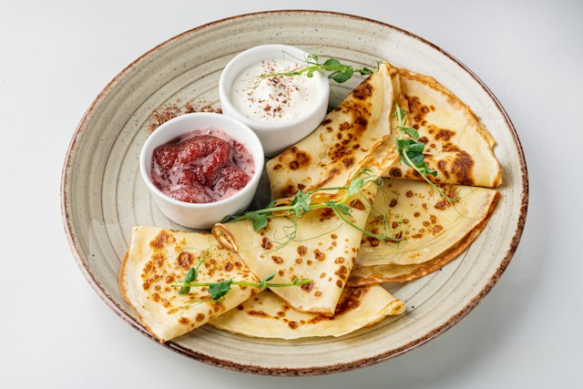
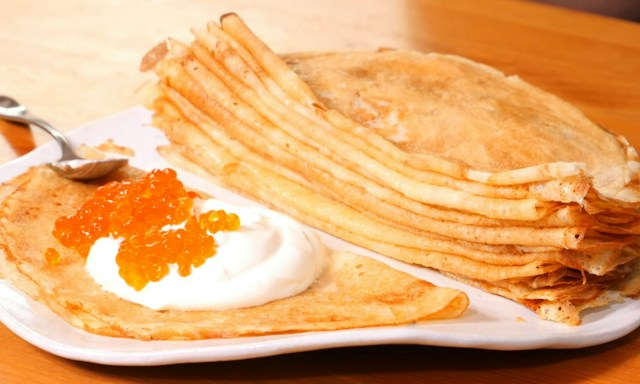

Enkelt recept på pannkakor
Gör traditionella tunna pannkakor med detta enkla och goda pannkaksrecept.
Ingredienser
För 4 portioner
- 2 1/2 dl vetemjöl
- 1/2 tsk salt
- 6 dl mjölk
- 3 ägg
- 3 msk smör till stekning
- Sylt, bär eller frukt till servering
Så här gör du
- Blanda mjöl och salt i en bunke.
- Vispa i hälften av mjölken till en slät smet.
- Vispa sedan ner resten av mjölken och äggen.
- Låt smeten vila i cirka 10 minuter.
- Smält smör i en stekpanna. Häll i lite smet och grädda tunna pannkakor.
- Servera med sylt, bär eller frukt.
Serveringsförslag

